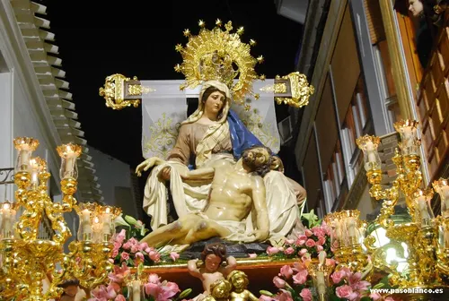

Ultimo dia
La Semana Santa de Huércal-Overa culmina con el Viernes Santo, cuando el Paso Negro realiza la solemne procesión del Santo Entierro.

Semana Santa de Huércal-Overa, declarada Fiesta de Interés Turístico Nacional en 1983, es una de las celebraciones religiosas y culturales más destacadas de la provincia de Almería. Su carácter combina solemnidad, tradición y gran participación vecinal, convirtiéndose en un referente para visitantes. Durante esos días, las calles se llenan de procesiones, música, bordados y pasos cuidadosamente preparados. La estética mezcla la majestuosidad andaluza con la sobriedad cartagenera, ofreciendo un espectáculo único. Además, representa un orgullo y un elemento de identidad para la localidad.

En el año 2007 se impulsaron varias novedades para enriquecer esta tradición. Destaca la creación de las Casas Museo de Semana Santa, donde cada cofradía podrá exponer sus enseres y patrimonio durante todo el año. También se han restaurado imágenes, como la del Cristo Ayacente
, devolviéndole su papel central en el culto. Estas mejoras, junto con la promoción turística apoyada por instituciones, refuerzan la Semana Santa como motor cultural y social. Así, Huércal-Overa continúa proyectando su historia y fe hacia el futuro.
La Semana Santa de Huércal-Overa culmina con el Viernes Santo, cuando el Paso Negro realiza la solemne procesión del Santo Entierro.